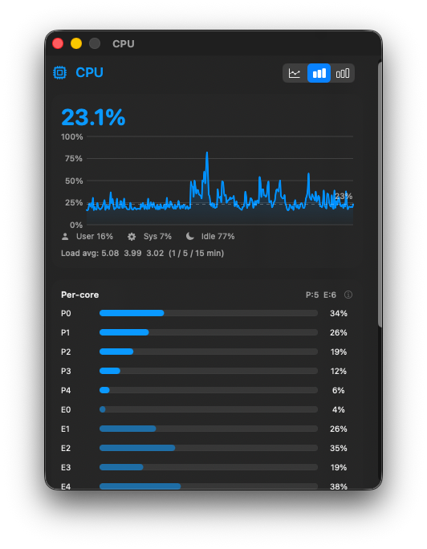

What a system monitor costs
30 July 2026 · Kevin Stam
I write a system monitor for the macOS menu bar, and its selling point is that it does not cost you much of the machine it measures. Last week I decided to check that claim properly. It turned out to be true only if you never opened a window.

The claim, and the doubt
Performance Monitor sits in the menu bar and samples CPU, memory, disk, network, GPU, temperatures and battery. An app like that is in an awkward position: every cycle it spends is a cycle it then reports as used. So the app gates its expensive work on visibility. The ps and nettop process lists, the extended sensor set, per-domain power and per-process disk I/O all run only while a window that displays them is on screen.
That gating went in months ago and the idle figure looked good, so I stopped thinking about it. Then I measured the beta against the released version and got a number I did not like.
First I measured it wrong
Worth admitting up front, because the mistake is the useful part.
My first instinct was ps -o %cpu. That column is not current usage: it is an average over the life of the process. Sampling it repeatedly measures something that converges rather than something that is happening. The project's own benchmark script says so in a comment, which I had written and then ignored.
The second mistake was worse. I ran the beta and the released build side by side, got 4.3% against 1.8%, and concluded the beta had regressed. It had not. The beta had a detail window open and the released build did not, because I had just launched it. I had compared a window doing live chart work against an app sitting idle, and read it as a regression.
The fix for both is the same: verify the state you think you are measuring before you believe the number.
sample <pid> 20 -file profile.txtand, separately, ask the window server what is actually on screen through CGWindowListCopyWindowInfo. If the profile contains a view that should not be mounted, the number is not measuring what you think.
The finding
Once both builds were genuinely idle, with the window list confirming nothing on screen, the profile still contained this:
MemoryDetailView.body.getter (in Performance Monitor)
Published.subscript.getter (in Combine)
SectionCard<ProcessListView> (in Performance Monitor)
The Memory detail window had been closed for minutes. Its SwiftUI view tree was still alive, still subscribed to the metrics engine, and still re-evaluating its body on every published change. The engine publishes roughly eighty times a second. Nothing was on screen to show any of it.
SwiftUI keeps a scene's view tree after its window closes. That is reasonable behaviour on its own, since reopening is then instant. It stops being reasonable when the tree observes a firehose.
The numbers, measured with the project's benchmark script over four minutes, both builds running at the same time on an M3 Pro:
| State | CPU | Memory |
|---|---|---|
| Fresh launch, no window ever opened | 1.76% | 78 MB |
| After opening and closing one detail window | 4.25% | 108 MB |
One window, opened once, closed again. The cost stayed for the rest of the session and never came back down. The History window was worse: besides its charts it runs a task that re-queries its database every ten seconds, and a task lives as long as the view does. Closing that window left a database query running on a timer indefinitely.
The part that bothers me
This had been found before. Seven days earlier, in fact, by me. There was a comment in the source explaining that the leak existed and had been deliberately left alone:
"Measured here at roughly 60 to 97 sizeThatFits samples out of ~6000 ... The difference was below the noise floor (6.5% after open/close vs 6.9% with nothing ever opened) ... That is a visible regression traded for an unmeasurable gain, so it stays as is. Revisit only if a future change makes this measurable."
- Leak found and measured: 6.5% after open and close, against 6.9% with nothing opened. Correctly judged to be noise, and left in place with a comment saying to revisit if it ever became measurable.
- An unrelated change stops the top-level scene from observing the engine. The idle floor drops from 5.3% to 2.5%. The condition in that comment is now met, and nobody notices.
- Found again while chasing a different number. Same bug, now the largest single cost of an idle app.
- Fixed. Window scenes unmount their content while hidden. Zero view frames in the profile afterwards.
That call was correct when it was made. Against an idle floor of nearly 7%, an extra couple of percentage points genuinely was noise.
What makes it interesting is what happened next. Later the same evening, a separate change stopped the app's top-level scene from observing the engine, and the idle floor dropped from 5.3% to 2.5%. The same absolute cost was suddenly the largest single thing the app did while doing nothing.
The comment had even written its own trigger: revisit only if a future change makes this measurable. That change landed a few hours later, and nobody went back. A conditional decision was recorded correctly and then quietly expired, because the condition was written where a person had to notice it rather than somewhere a tool would.
I do not have a tidy answer for that. Lowering a floor turns yesterday's noise into today's dominant cost, and dismissals age worse than fixes do.
A second thing, found while looking
An audit of what runs per tick versus what is actually displayed turned up something separate. The latency figure in the Network window was measured by a timer started at launch and never stopped, firing a real HTTPS request at an external host every five seconds for the entire session. Over seven hundred requests an hour, for a number displayed in one window that is usually closed.
That is not a large amount of CPU. It is radio wakeups, battery, and unprompted outbound traffic from an app whose main promise is that nothing leaves your machine. It now starts when the Network window becomes visible and stops when it goes away. Measured over a minute, with both builds running:
| Build | Network traffic in 60s |
|---|---|
| Before | 10,751 bytes |
| After | 271 bytes |
Bytes sent and received per minute, app idle.
Where it ended up
Window scenes now unmount their content while hidden, driven by the same occlusion and close events that already gated the samplers, so the view tree and the sampling gate cannot disagree about whether a window is on screen. After real use, including opening and closing several windows, the profile contains zero DetailView, MetricChart and Charts frames, against 24, 56 and 840 for the build without the fix.
| Build, after a window had been opened and closed | CPU | Memory |
|---|---|---|
| 1.1.0 | 4.18% | 89 MB |
| 1.2.0 | 2.21% | 99 MB |
Roughly half. Not all of it: a window that has been opened and closed still costs about half a percentage point and thirty-five megabytes over a fresh launch, so something beyond the content tree is still retained. That is written down and not yet chased.
One note on the scale, because it is easy to compare the wrong things. Every percentage here is a share of a single core, which is what ps and top report for a process. The app's own process list divides that by the core count instead, so it shows a share of the whole machine and a much smaller number for the same work. Neither is wrong; they answer different questions.
Two honest caveats. There is around 0.3 percentage points of variance between runs, so treat these as "comfortably under 3%" rather than as exact figures. And the memory number went up, not down, because 1.2.0 also added per-domain power measurement and per-process disk I/O. It would be convenient to leave that out.
Measure your own
The script is in the repository and it takes no arguments to be useful. It samples cumulative CPU time and divides by elapsed wall time, which is the measurement ps -o %cpu does not give you, and it sums every process belonging to an app rather than only the visible one.
bash scripts/benchmark.sh -d 5 -i 10 -l "idle"It knows about several menu bar monitors and reports on whichever are running, so you can put yours next to mine, or next to each other. I have deliberately not published comparisons with other apps here, because I have not measured them under conditions I would defend, and a benchmark of someone else's software run carelessly is worse than no benchmark.
Before you trust a number:
- Close every window and confirm it with the window list, not by looking.
- Profile once and check nothing is mounted that should not be.
- Compare like with like. Both builds idle, or both with the same window open.
- Use CPU time deltas, not
ps -o %cpu. - Run it more than once. There is real variance between runs.
If you do run it, one thing matters more than the numbers: check what state you are actually in. Close everything, confirm with the window list, and profile once to see what is mounted. I got that wrong twice in one afternoon on an app I wrote.
Performance Monitor is free and open source. The app, the source, and the benchmark script.